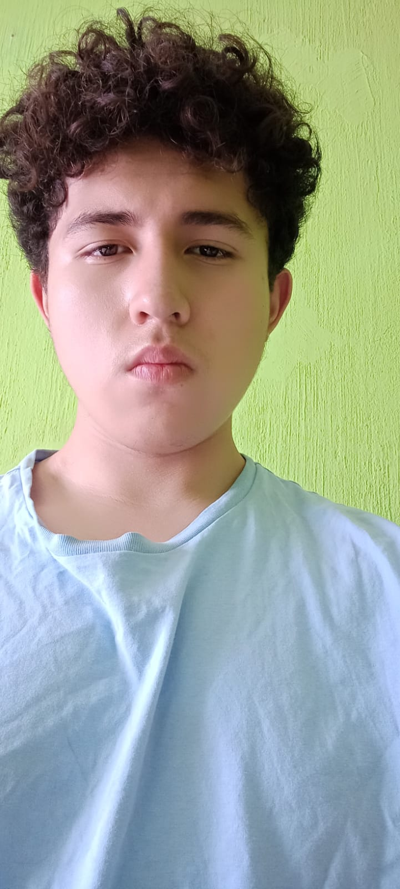
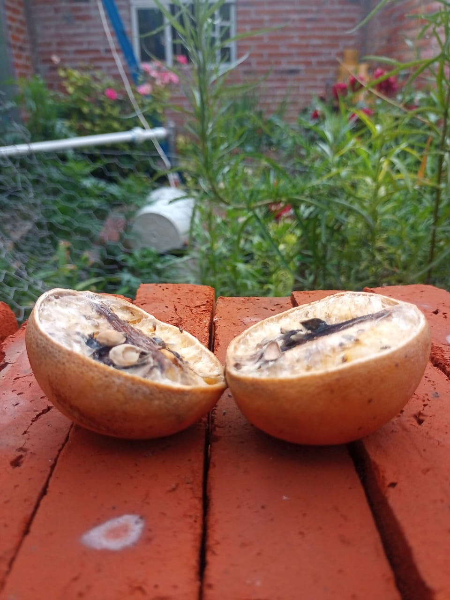
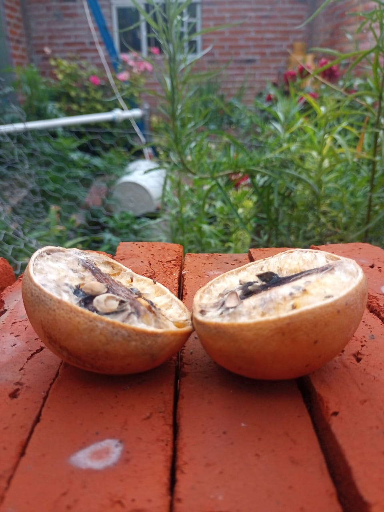

Mi viaje de aprendizaje

Mi historia
Hola soy Luis Fernando Vargas Contreras, estoy cursando la preparatoria en 2° semestre, soy de Santa Cruz el grande y me gusta jugar videojuegos, jugar basketball, escuchar musica y estar con mis amigos. pertenezco a la religion catolica, me gusta andar en bicicleta, salir a tomar el aire y convivir con mi familia. Soy una persona que expresa mucho sus sentimientos, me gusta ser respetuosa con la gente, me gusta hablar con amigos y personas adultas, usualmente estoy feliz es muy raro que pierda el control o que me enoje, soy mu amable con las personas que me respetan, estoy en un coro de la iglesia que cada domingo nos juntamos para cantar es un pequeño pasatiempo con el que me desestrezo de toda actividad y me encuentro en paz
Mis logros y retos
Graduacion de la primaria
Graduacion de la secundaria
2do lugar en concurso de canto
Durante todo tercero de secundaria y el primer semestre de preparatoria saque 10 perfecto
Logre tener exito en un proyecto de una microempresa en tercer grado de secundaria
Mis retos principalmente fueron durante la secundaria ya que sufria mucho de burlas de parte de mis compañeros de la escuela y abusaban de mi en los trabajos y actividades durante toda la secundaria y ademas de eso de las materias que mas he sufrido por su manera de evaluar fueron cultura digital y lengua y comunicacion porque en algunas cosas se me dificultan de la materia, los pude superar eligiendo bien mis amistades en la prepa y en las materias me puse a desarrollar nuevos conocimientos que me faciliten mejor los temas que voy viendo durante el trascurso de las materias
Proyectos realizados
Durante el primer semestre pude realizar un proyecto donde hicimos nieves de garrafa en el que pudimos sacar 10
Un proyecto que se me hizo interesante fue haber hecho una historieta en el primer semestre en el cual me inspire mucho para hacerla
En secundaria llegue a realizar un stop motion de lo que tardaba en descomponerse una naranja durante una semana hacer esta animacion fue increible y expresa un gran arte de la naturaleza
 

Metas y aspiraciones
En un futuro deseo terminar la preparatoria, empezar a tener un trabajo para generar ingresos para mis estudios en la universidad, en la universidad estudiaria mas sobre temas de filosofia pero no dejaria atras mi carrera aprendiendo nuevos conocimientos de ella, mejoraria mi nivel de ingles y aprenderia uno de mis idiomas favoritos el frances, mejoraria en el basketball y sin descuidar mis estudios buscaria la manera de entrar a ligas en las que permitan desarrollar mejor control del deporte. Estudiaria las leyes fiscales, reglamentos o informacion acerca de la contabilidad mediante la biblia del contador estudiando mas teoricamente. Logrando graduarme como contador publico buscaria la manera de tener un despacho o trabajar en un buen puesto como contador en el gobierno, construiria mi casa y generando mas ingresos empezaria a construir un negocio para que cuando se me de la oportunidad casarme con alguien que de verdad pueda amarme y tener una familia por lo menos establemente pacifica.
Durante los proximos meses y años mis objetivos son seguir estudiando, durante las vacaciones buscar un trabajo de medio tiempo para generar ingresos, si es posible entrar a un torneo de basketball que se hara en la prepa, leer un poco de libros enfocados en poemas epicos como lo es la divina comedia que la terminaria donde me quede y seguir ayudando a mis padres en el negocio para que poco a poco vaya creciendo
Lecciones de vida
Durante este viaje academico y personal he aprendido que como ser humano me falta aprender de mis errores, de desarrollar nuevos retos de aprendizaje, he desarrollado mayor confianza en mi mismo logrando tener buenas amistades que durante la secundaria perjudicaron mucho mi estado de animo y dejandome casi por los suelos. Este proceos de vida me enseñado a defenderme y de enfocarme a ser una mejor persona aprender cosas nuevas, disfrutar la vida, convivir con amigos y lo mas importante estar junto con tus seres queridos como lo es mi familia que durante todo este proceso no me han dejado de apoyar y que algun dia yo les podre pagar todo lo que hicieron por mi. En fin yo como persona les digo disfruten la vida, no se dejen llevar por los estereotipos o de las envidias de las personas en la vida siempre habra errores pero siempre trata de caer muchas veces en el, has cosas nuevas trabaja, empieza a independizarte y no te rindas tu puedes lograrlo.
Ver video en youtube